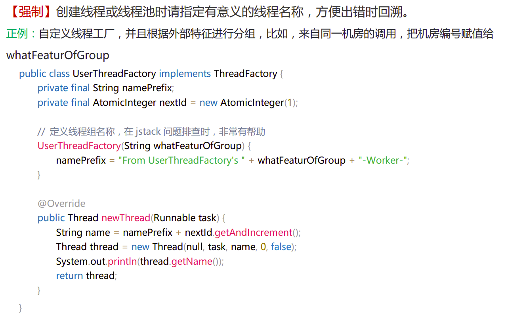
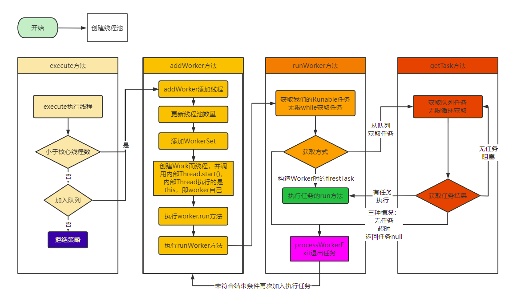
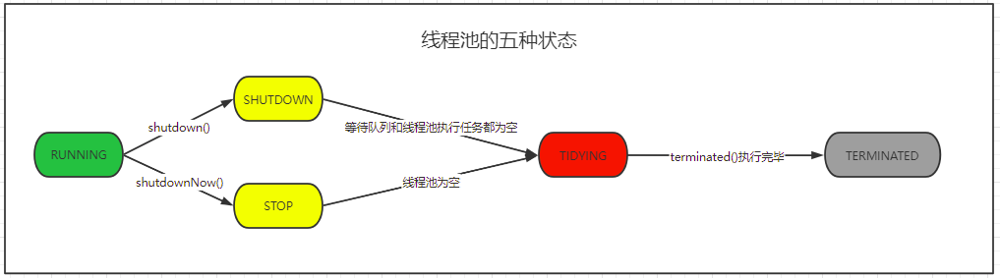
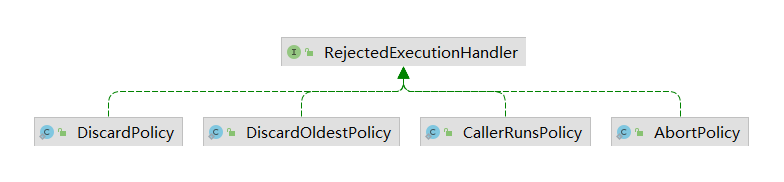
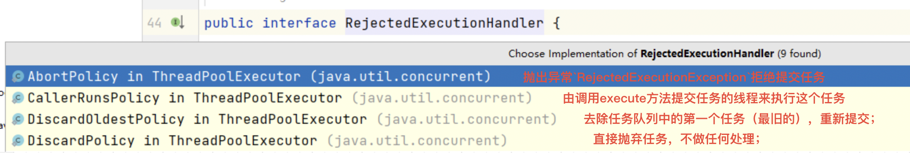

线程池与线程对比
new Thread 的弊端
- 创建：每次new Thread时，新建对象性能差。
- 管理：线程缺乏统一管理，可能无限制新建线程，相互之间竞争，可能占用过多系统资源导致死机或
oom。 - 功能：缺乏更多功能，如定时执行、定期执行、线程中断。
Java提供的四种线程池相比new Thread的优势
- 创建：重用存在的线程，减少对象创建、消亡的开销，性能佳。
- 管理：可有效控制最大并发线程数，提高系统资源的使用率，同时避免过多资源竞争，避免堵塞。
- 功能：提供定时执行、定期执行、单线程、并发数控制等功能。
Java线程池
Java通过Executors提供四种线程池
newCachedThreadPool创建一个可缓存的线程池。如果线程池的大小超过了处理任务所需要的线程，那么就会回收部分空闲（60秒不执行任务）的线程，当任务数增加时，此线程池又可以智能的添加新线程来处理任务。此线程池不会对线程池大小做限制，线程池大小完全依赖 于操作系统（或者说JVM）能够创建的最大线程大小。newFixedThreadPool创建固定大小的线程池。每次提交一个任务就创建一个线程，直到线程达到线程池的最大大小。线程池的大小一旦达到最大值就会保持不变，如果某个线程因为执行异常而结束 ，那么线程池会补充一个新线程。newScheduledThreadPool创建一个大小无限的线程池。此线程池支持定时以及周期性执行任务的需求。newSingleThreadExecutor创建一个单线程的线程池。这个线程池只有一个线程在工作，也就是相当于单线程串行执行所有任务。如果这个唯一的线程因为异常结束，那么会有一个新的线程来替代它。此线程池保证所有任务的执行顺序按照任务的提交顺序执行(FIFO, LIFO)。
实例对比
看一个例子，来对别线程与线程池的执行效率
1 | // 线程执行情况 |
1 | // java线程池执行相同的任务 |
从执行结果看，很显而易见。线程池和线程执行效率完全不在一个数量级。
对比来看，使用线程运行的程序：
- 创建线程数：100001个
- 创建对象数：100000个
使用线程池的程序：
- 创建线程数：2个
- 创建对象数：100000个
从上面的例子来看，确实线程池比线程的执行效率快很多，但是使用线程池一定比线程快吗？
这个答案肯定也是否定的，接下来我们来对比一下java中提供的几种线程池的执行？
1 | // 线程池执行方法 |
1 | /** |
结果分析：
最终不论采用哪个线程池，最终十个任务都会被执行这个是必然的，但是在执行的效率上差别还是很大的。
cachedThreadPool：可以看到执行效率是最快的，从执行结果来看，分别为每一个任务new了一个线程是去单独执行相应的任务。线程pool-1-thread-1执行第1个任务
线程pool-1-thread-2执行第2个任务
线程pool-1-thread-3执行第3个任务
线程pool-1-thread-4执行第4个任务
线程pool-1-thread-5执行第5个任务
线程pool-1-thread-6执行第6个任务
线程pool-1-thread-7执行第7个任务
线程pool-1-thread-8执行第8个任务
线程pool-1-thread-9执行第9个任务
线程pool-1-thread-10执行第10个任务fixedThreadPool：这个线程池执行效率应该是居中，同时这个线程池的执行效率和传入的参数是有关的，从输出的结果可以看到，传入参数是多少，就会创建多少个线程同步执行任务。线程pool-2-thread-2执行第2个任务
线程pool-2-thread-1执行第1个任务
线程pool-2-thread-2执行第3个任务
线程pool-2-thread-1执行第4个任务
线程pool-2-thread-2执行第5个任务
线程pool-2-thread-1执行第6个任务
线程pool-2-thread-2执行第7个任务
线程pool-2-thread-1执行第8个任务
线程pool-2-thread-2执行第9个任务
线程pool-2-thread-1执行第10个任务singleThreadExecutor：从线程池的名称也可以猜到，这个是一个单线程的线程池，每次只能执行一个任务，自然效率也是最低的。执行结果中也可以很明显看到只有一个线程在执行任务。线程pool-3-thread-1执行第1个任务
线程pool-3-thread-1执行第2个任务
线程pool-3-thread-1执行第3个任务
线程pool-3-thread-1执行第4个任务
线程pool-3-thread-1执行第5个任务
线程pool-3-thread-1执行第6个任务
线程pool-3-thread-1执行第7个任务
线程pool-3-thread-1执行第8个任务
线程pool-3-thread-1执行第9个任务
线程pool-3-thread-1执行第10个任务
由上面分析我们可以看到java中提供了不同情况的线程池，但是在阿里代码手册中并不让使用java默认的线程池，那这又是为什么呢？
我们看下阿里开发手册中关于线程与线程池的创建是如何规定的：

要求自定义线程工厂。
//自定义线程
ThreadPoolExecutor threadPoolExecutor = new ThreadPoolExecutor(10, 20, 20L, TimeUnit.MILLISECONDS, new LinkedBlockingQueue(10));
源码分析
线程池执行流程


线程池的五种状态

线程池的5种状态：Running、ShutDown、Stop、Tidying、Terminated。
RUNNING
- 状态说明：线程池处在
RUNNING状态时，能够接收新任务（线程池没有满的情况下），以及对已添加的任务进行处理。 - 状态切换：线程池的初始化状态是
RUNNING。换句话说，线程池一旦被创建，就处于RUNNING状态，并且线程池中的任务数为0。
1 | private final AtomicInteger ctl = new AtomicInteger(ctlOf(RUNNING, 0)); |
SHUTDOWN
- 状态说明：线程池处在
SHUTDOWN状态时，不接收新任务，但能处理已添加的任务。 - 状态切换：调用线程池的
shutdown()接口时，线程池由RUNNING->SHUTDOWN。
STOP
- 状态说明：线程池处在
STOP状态时，不接收新任务，不处理已添加的任务，并且会中断正在处理的任务。 - 状态切换：调用线程池的
shutdownNow()接口时，线程池由(RUNNINGorSHUTDOWN) ->STOP。
TIDYING
- 状态说明：当所有的任务已终止，
ctl记录的任务数量为0，线程池会变为TIDYING状态。当线程池变为TIDYING状态时，会执行钩子函数terminated()。terminated()在ThreadPoolExecutor类中是空的，若用户想在线程池变为TIDYING时，进行相应的处理；可以通过重载terminated()函数来实现。 - 状态切换：当线程池在
SHUTDOWN状态下，阻塞队列（任务队列）为空并且线程池中执行的任务也为空时，就会由SHUTDOWN->TIDYING。 当线程池在STOP状态下，线程池中执行的任务为空时，就会由STOP->TIDYING。
TERMINATED
- 状态说明：线程池彻底终止，就变成
TERMINATED状态。 - 状态切换：线程池处在
TIDYING状态时，执行完terminated()之后，就会由TIDYING->TERMINATED。
四种拒绝策略
ThreadPoolExecutor内部有实现4个拒绝策略：
核心参数
- corePoolSize：核心线程数
- maximumPoolSize：最大线程数
- workQueue：阻塞队列，存储等待执行的任务
- keepAliveTime：线程没有任务执行时保持存活时间
- unit：keepAliveTime的时间单位
- threadFactory：线程工厂
- rejectHandler：拒绝策略，当阻塞队列满了时，没有空闲的线程池，此时需要一种策略处理当前任务



...
...
Copyright 2021 sunfy.top ALL Rights Reserved